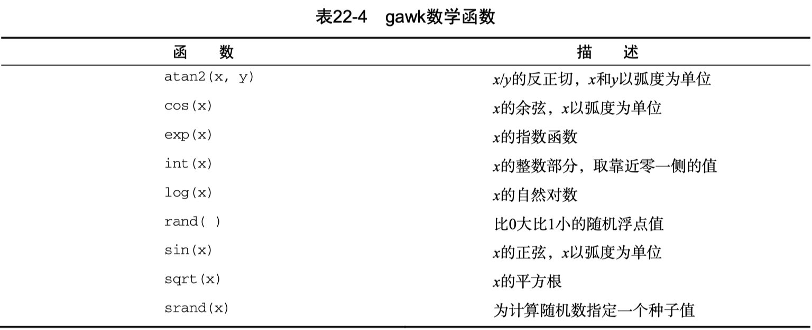
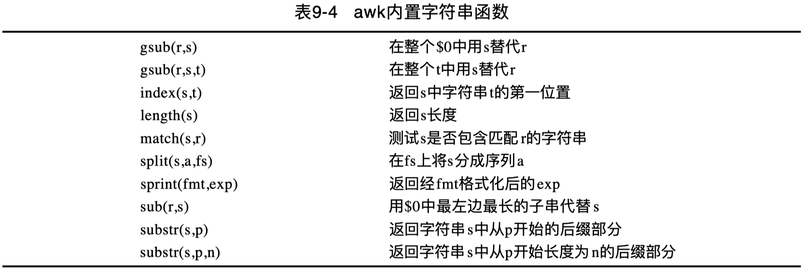
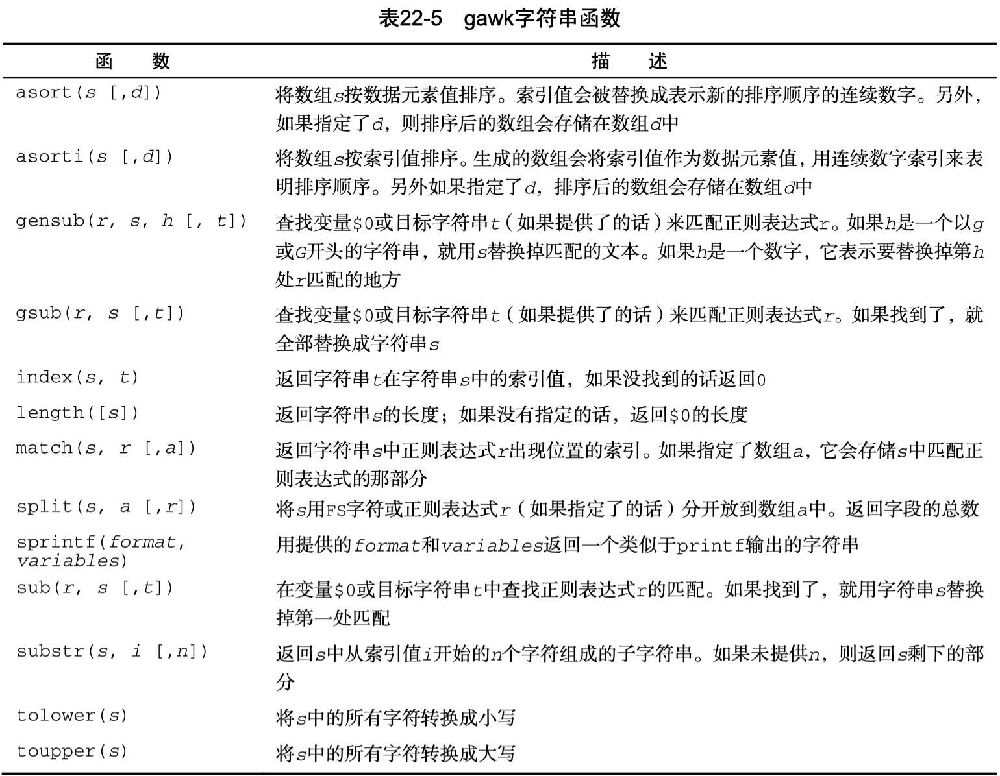

Linux Command - awk functions
Linux 下的 awk 命令中的函数运用。
Arith#

String#


asort、asorti和gensub为 gawk 特有函数，macOS awk 不支持。
相关函数梳理如下：
gsub() 函数有点类似于 sed 查找和替换。它允许替换一个字符串或字符为另一个字符串或字符，并以正则表达式的形式执行。
第一个函数作用于记录
$0；
第二个函数允许指定目标，若未指定目标，缺省为$0。
index(s,t) 函数返回目标字符串 s 中查询字符串 t 的首位置。
length(s) 函数返回字符串 s 的字符长度。
match(s,r) 函数测试字符串 s 是否包含一个正则表达式 r 定义的匹配。
split(s,a,fs) 使用域分隔符 fs 将字符串s划分为指定序列a。
sprintf(fmt,exp) 函数类似于 printf 函数，返回基本输出格式 fmt 的结果字符串 exp。
sub(r,s) 函数将用 s 替代 $0 中最左边最长的子串，该子串被（r）匹配。
substr(s,p) 返回字符串 s 在位置 p 后的后缀。
substr(s,p,n) 同上，并指定子串长度为 n。
length#
返回所需字符串长度。
以下返回常量字符串长度：
以下检验字符串 J.Troll 返回名字及其长度，即人名构成的字符个数。
$ awk '$1=="J.Troll"{print length($1),$1}' grade.txt
7 J.Troll
$ awk '$1=="J.Troll"{print "length(",$1,") =",length($1)}' grade.txt
length( J.Troll ) = 7
index#
查询字符串s中t出现的第一位置，必须用双引号将字符串括起来。
注意：索引从1开始。
$ test="cat"
$ sentence="The cat sat on the mat"
$ index=`awk -v a="$sentence" -v b="$test" 'BEGIN{print index(a,b)}'`
$ echo $index
5
match#
match 测试目标字符串是否包含查找字符的一部分。
可以对查找部分使用正则表达式，返回值为成功出现的字符（子串）索引位置。如果未找到，则返回 0。
# 在 ANCD 中查找 d
$ awk 'BEGIN{print match("ANCD", /d/)}'
0
# 在 ANCD 中查找 C
$ awk 'BEGIN{print match("ANCD", /C/)}'
3
# 在学生 J.Lulu 中查找子串 u
$ awk '$1=="J.Lulu"{print match($1, "u")}' grade.txt
4
# 在学生 J.Lulu 中查找子串 lu
$ awk '$1=="J.Lulu"{print match($1, "lu")}' grade.txt
5
多行划分区块删除#
在 awk-pattern 中的 多行划分区块 示例中，基于 - path: 划分区块。
留下了一个问题：如何进一步基于 awk 命令移除这些匹配的 CR 规则区块记录呢？
sed 天然适合用来执行此类区块匹配及删除操作：
由于 awk 没有直接的删除命令，因此无法模式匹配删除，相应的等效实现稍显复杂。
只能反向匹配剩余的记录，由于区块记录分隔符自身不在匹配记录中，需要想办法补齐分割掉的 RS 前缀。
- 首先使用域模式的否定匹配，过滤出所有不包含
/Classes/ui/DeviceMgr/的目录，即需要保留的； - 由于 .code.yml 文件开头有一大段规则描述，故忽略掉第1个
- path:之前的第1条记录，相当于if (NR==1) next;直接打印第1条记录； - 如果记录块的第1行以
/开头（合起来就是- path: /xxx），或第2行包含owners:（第1行路径可能非斜杠开头，也可能是行号），则补齐切割掉的 RS 前缀（- path:），并且打印该条记录；不匹配的则直接打印该记录块。
# 调试
awk 'BEGIN {RS="- path: "; FS="\n"; ORS=""; OFS="\n"}
$1 !~ /\/Classes\/ui\/DeviceMgr\// {
if (NR > 1 && (index($1, "/")==1 || index($2, "owners:")))
$1="- path: "$1;
print $0
}' bak.code.yml | more
调试OK后，可将移除匹配区块后的内容重定向输出到新的文件：
awk 'BEGIN {RS="- path: "; FS="\n"; ORS=""; OFS="\n"}
$1 !~ /\/Classes\/ui\/DeviceMgr\// {
if (NR > 1 && (index($1, "/")==1 || index($2, "owners:")))
$1="- path: "$1;
print $0
}' bak.code.yml > rm.code.yml
执行 diff bak.code.yml rm.code.yml 或 code --diff bak.code.yml rm.code.yml 对比，校验移除是否符合预期。
substr#
返回常量字符串从指定索引开始的后缀：
以下为 index 和 substr 综合示例：
# a 在句子中的索引位置
$ echo 'This is a test' | awk '{print index($0,$3)}'
9
# 从 a 索引开始至末尾的子串
$ echo 'This is a test' | awk '{print substr($0, index($0,$3))}'
a test
# 从 a 索引开始长度为4的子串
echo 'This is a test' | awk '{print substr($0, index($0,$3), 4)}'
a te
返回从1开始长度为5的子串：
substr 的另一种形式是返回字符串后缀或指定位置后面字符。
pipe#
$ echo "Stand-by" | awk '{print length($0)}'
8
$ STR="mydoc.txt"
$ echo $STR | awk '{print substr($0,1,5)}'
mydoc
$ echo $STR | awk '{print substr($0,7)}'
txt
以下为 index 和 substr 综合示例，基于文件名分隔符切分文件名和后缀：
echo $STR | awk '{
l=length($0)
i=index($0,".")
prefix=substr($0,1,i-1)
suffix=substr($0,i+1)
print "prefix="prefix,"suffix="suffix
}'
prefix=mydoc suffix=txt
split#
使用 split 返回字符串数组元素个数。
工作方式如下：如果有一字符串，包含一指定分隔符 -，例如 AD2-KP9-JU2-LP-1，将之划分成一个数组。
使用 split，指定分隔符及数组名，返回数组下标数，这里结果为4。
$ awk 'BEGIN{print split("123#456#789",myarray,"#")}'
3
$ awk 'BEGIN{print split("AD2-KP9-JU2-LP-1",parts_array,"-")}'
5
for 循环遍历数组：
awk 'BEGIN{
print split("AD2-KP9-JU2-LP-1",parts_array,"-")
for (i in parts_array)
{
print "Index:",i,"- Value:",parts_array[i]
}
}'
5
Index: 2 - Value: KP9
Index: 3 - Value: JU2
Index: 4 - Value: LP
Index: 5 - Value: 1
Index: 1 - Value: AD2
接上述基于 pipe 从shell中向awk传入字符串的例子，基于 split 函数分割文件名和后缀：
echo $STR | awk '{
print split($0,components,".")
print "prefix="components["1"],"suffix="components["2"]
}'
2
prefix=mydoc suffix=txt
sub#
使用 sub 发现并替换模式的 第一次 出现位置。
# 模式 op 第一次出现时，进行替换
$ awk 'BEGIN{STR="poped popo pill"; sub(/op/,"OP",STR); print STR}'
pOPed popo pill
匹配记录（$0）中第一处出现的模式 4842，进行替换
gsub#
gsub 相对 sub，多了个 g 标志，发现并替换记录中所有匹配模式的地方。
# 模式 op 所有出现的地方，都进行替换
$ awk 'BEGIN{STR="poped popo pill"; gsub(/op/,"OP",STR); print STR}'
pOPed pOPo pill
user-defined#
函数定义作为独立部分，独立于 begin、body、end 部分：
$ awk '
function myprint()
{
printf "%-16s - %s\n", $1, $4
}
BEGIN{FS="\n"; RS=""}
{
myprint()
}' data2
Riley Mullen - (312)555-1234
Frank Williams - (317)555-9876
Haley Snell - (313)555-4938
可以参考 awk trim 函数。